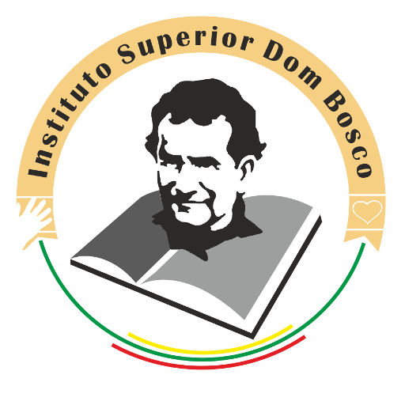

Bem-vindo! üåü
Respondo porExperiências

MALEsoftware
Desempenhei um papel crucial no desenvolvimento da aplicação de Recursos Humanos, além de realizar a manutenção da aplicação web de seguradoras em VB e das aplicações desktops de Patrimônio, Crédito e Contabilidade. Destaco meu envolvimento na adaptação dessas aplicações às demandas dos clientes e às tendências do mercado. Contribuí para a criação de Web Services, facilitando a integração entre sistemas. Além disso, atuei ativamente na assistência e instrução a estagiários, promovendo o compartilhamento de conhecimentos e estimulando o crescimento da equipe.

IPET
Fui formador no curso de Administração de Sistemas de Redes, especificamente no módulo de Análise de Sistemas de Informação. Durante esse período, compartilhei conhecimentos práticos e teóricos, abordando temas como arquitetura de sistemas, design eficiente e segurança da informação. Meu objetivo era preparar os alunos para os desafios da administração de redes, incentivando o pensamento crítico e a adaptabilidade a ambientes dinâmicos. A experiência foi enriquecedora, contribuindo para o desenvolvimento profissional.

ISDB
Durante minha licenciatura em Administração de Sistemas de Redes Informáticas, adquiri experiência abrangente em programação (Java, C#, Python) e administração de redes. Desenvolvi habilidades em segurança da informação, virtualização, gestão de projetos e administração de bancos de dados. Minha formação também incluiu prática em troubleshooting e ênfase na comunicação eficaz. Esta experiência preparou-me para desafios na área de tecnologia da informação, proporcionando uma base sólida para otimizar infraestruturas de TI.